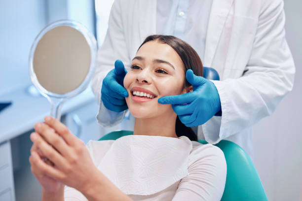
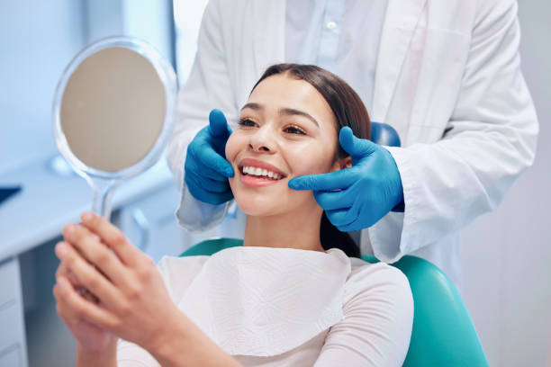

Диагностика и лечение проводятся по всем основным направлениям стоматологии: терапия, ортопедия, микропротезирование, челюстно-лицевая хирургия и имплантация, пародонтология, ортодонтия, детская стоматология, а также рентгенодиагностика с возможностью получать 3D-изображения.
Все виды стоматологических работ выполняются с использованием инновационных материалов и современного оборудования, что обеспечивает высокий уровень качества лечения, позволяет достигать максимально точных и эффективных результатов.
Наличие собственного зуботехнического производства подразумевает изготовление различных стоматологических конструкций в оптимальные сроки и с высоким качеством.
Стоматологические услуги
Лечение зубов
Для оказания высококвалифицированной стоматологической помощи, в том числе при лечении кариеса, специалисты МЕДИ применяют широчайший спектр современных материалов, а также комплекс уникального оборудования и инструментов, что позволяет решать самые сложные стоматологические задачи. Врач оценивает ситуацию, проводит комплексную диагностику и, в зависимости от того, насколько далеко зашел патологический процесс, выбирает способ лечения кариеса. Разумеется, чем раньше начать лечение, тем лучше. Виды обезболивания подбираются врачом индивидуально для каждого пациента, в некоторых случаях при наличии показаний проводится лечение под наркозом.
Микропротезирование зубов
По своей сути микропротезы — это индивидуальные пломбы (их называют вкладками или накладками), изготовленные из керамического или композитного материала в зуботехнической лаборатории. Так как данная технология подразумевает работу с использованием специальных приборов (артикуляторов) и различных печей, конструкции получаются значительно прочнее, усадка материала сводится к минимуму, что позволяет увеличить срок службы, а по форме и цвету микропротез приближается к естественным тканям зуба.
Детская стоматология
Необходимо принимать во внимание следующее: временные зубы отличаются от постоянных меньшим размером, более тонким слоем твердых тканей (на боковой поверхности зуба слой эмали всего 1 мм), более шероховатой поверхностью и, при всех этих особенностях, низкой степенью минерализации.
Еще одной важной особенностью развития зубочелюстной системы у ребенка является близость корней временных зубов к зачаткам постоянных. Если вовремя не вылечить кариес «молочного зуба», инфекция поражает нерв — и развивается пульпит. Далее инфекция может распространяться по корневым каналам в костную ткань, что может привести к поражению зачатка постоянного зуба (от патологии эмали в виде пятен или дефектов до полной гибели).
Вот почему молочные зубы обязательно нужно беречь. Специалисты МЕДИ рекомендуют посетить стоматолога сразу после того, как у ребёнка прорезались первые зубы. Рекомендации, которые они дадут, позволят сохранить здоровье не только молочным, но и будущим постоянным зубам.
Хирургия и имплантация зубов
Дентальная имплантация является высокотехнологичным направлением стоматологии, благодаря которому стало возможным осуществлять протезирование без препарирования зубов и даже при полной их утрате избежать съёмного протезирования. Передовые технологии, высококачественные материалы, современные методики диагностики, которые используют врачи МЕДИ для проведения зубной имплантации, гарантируют эффективность результатов на 100%. В большинстве случаев возможно проведение так называемой одномоментной (или экспресс-имплантации) сразу после удаления зуба.
В случае, когда зубосохраняющие операции уже не целесообразны и сохранить зуб не представляется возможным, врачи проводят его удаление, стараясь максимально сохранить объем костной ткани для проведения дальнейшей имплантации.
Кроме того, стоматологи МЕДИ владеют такими передовыми технологиями, как пьезохирургия, которая позволяет проводить хирургические операции с помощью ультразвука, что делает лечение менее травматичным и значительно облегчает восстановительный период для пациента.


 
